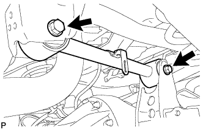
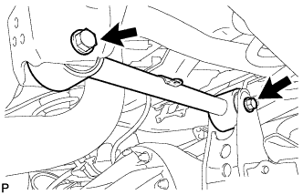
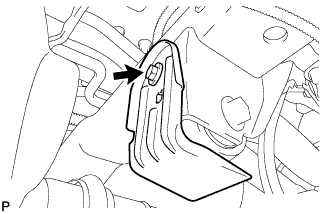
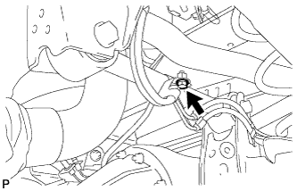
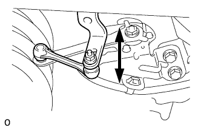

REAR UPPER ARM > INSTALLATION |
| 1. TEMPORARILY INSTALL REAR UPPER CONTROL ARM ASSEMBLY LH (w/ Active Height Control) |
 |
Temporarily install the rear upper control arm and 2 washers with the 2 bolts and 2 nuts.
| 2. TEMPORARILY INSTALL REAR UPPER CONTROL ARM ASSEMBLY LH (w/o Active Height Control) |
 |
Temporarily install the rear upper control arm and 2 washers with the 2 bolts and 2 nuts.
| 3. STABILIZE SUSPENSION |
Install the rear wheels.
Lower the vehicle.
Press down on the vehicle several times to stabilize the suspension.
| 4. TIGHTEN REAR UPPER CONTROL ARM ASSEMBLY LH |
Tighten the 2 nuts.
| 5. INSTALL REAR STABILIZER CONTROL TUBE INSULATOR (w/ KDSS) |
 |
Install the rear stabilizer control tube insulator with the 2 bolts.
| 6. INSTALL UPPER ARM BUSH HEAT INSULATOR (w/o KDSS) |
 |
Install the upper arm bush heat insulator with the bolt.
| 7. CONNECT SPEED SENSOR WIRE HARNESS |
 |
Connect the speed sensor wire harness with the bolt.
| 8. INSTALL REAR HEIGHT CONTROL SENSOR SUB-ASSEMBLY LH (w/ Active Height Control) |
 |
Install the sensor with the 2 bolts and nut.
Connect the connector and 2 clamps.
| 9. CONNECT CABLE TO NEGATIVE BATTERY TERMINAL (w/ Active Height Control) |
| 10. PERFORM VEHICLE OFF SET CALIBRATION (w/ Active Height Control) |
Perform the vehicle off set calibration (Click here).
| 11. ADJUST REAR HEIGHT CONTROL SENSOR SUB-ASSEMBLY LH (w/ Active Height Control) |
 |
Loosen the nut and adjust the link installation position by moving the height control sensor link up or down in the long hole of the bracket.
Tighten the nut of the height control sensor link.
| 12. MEASURE VEHICLE HEIGHT (w/ KDSS) |
Set the tire pressure to the specified value(s) (Click here).
Bounce the vehicle to stabilize the suspension.
 |
Measure the distance from the ground to the top of the bumper and calculate the difference in the vehicle height between left and right. Perform this procedure for both the front and rear wheels.
| 13. CLOSE STABILIZER CONTROL WITH ACCUMULATOR HOUSING SHUTTER VALVE (w/ KDSS) |
Using a 5 mm hexagon socket wrench, tighten the lower and upper chamber shutter valves of the stabilizer control with accumulator housing.
| 14. INSTALL STABILIZER CONTROL VALVE PROTECTOR (w/ KDSS) |
 |
Install the valve protector with the 3 bolts.
Attach the clamp, and connect the connector to the valve protector.
| 15. ADJUST HEADLIGHT ASSEMBLY (w/ Active Height Control) |
for Standard:
Adjust the headlight (Click here).
for HID:
Adjust the headlight (Click here).